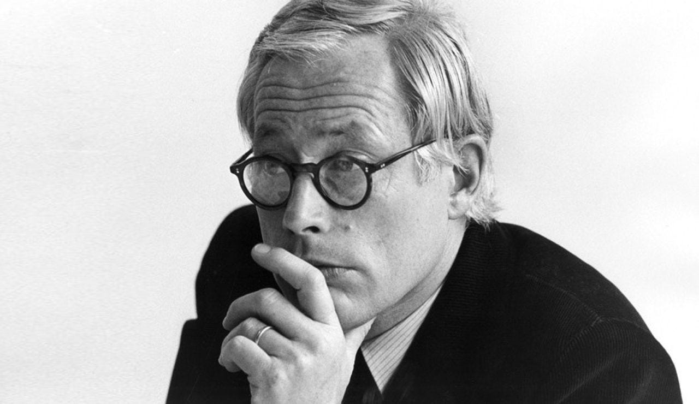

AWARDS
- 1960: Received Kulturkreis im Bundesverband der Deutschen Industrie
- 1961: TP1 portable record player and radio received Supreme Award at Interplas exhibition, London
- 1963: F21 received ‘Supreme Award’ at Interplas exhibition, London
- 1968: Honorary Member, Royal Designers for Industry of the British Royal Society of Arts
- 1969: 620 chair awarded gold medal at the International Furniture Exhibition in Vienna
- 1978: Awarded SIAD Medal of the Society of Industrial Artists and Designers, UK
- 1985: Awarded Académico de Honor Extranjero by the Academia Mexicana de Diseño, Mexico
- 1989: First recipient of the Industrie Forum Design Hannover, Germany, for special contribution to
design
- 1989: Awarded Doctor honoris causa by Royal College of Art, London, UK
- 1992: Received Ikea prize and uses prize money for his own Dieter and Ingeborg Rams Foundation for
the promotion of design
- 1996: Received World Design Medal from the Industrial Designers Society of America
- 2002: Awarded Commander's Cross of the Order of Merit of the Federal Republic of Germany (German:
Verdienstkreuz des Verdienstordens der Bundesrepublik Deutschland)
- 2003: Received Design Award ONDI, Havana, Cuba for his special contribution to industrial design and
world culture
- 2007: Awarded Design Prize of the Federal republic of Germany for his life’s work
- 2007: Received Lucky Strike Designer Award from the Raymond Loewy Foundation
- 2009: Awarded the great design prize in Australia.[clarification needed]
- 2010: Kölner Klopfer prize awarded by the students of the Cologne International School of Design
- 2012: Reddot design award and IF product design award, for the BN0106 digital chronograph
- 2013: Awarded Lifetime Achievement Medal at London Design Festival 2013
